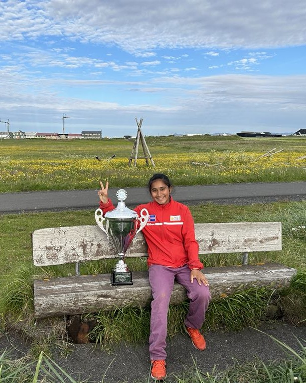
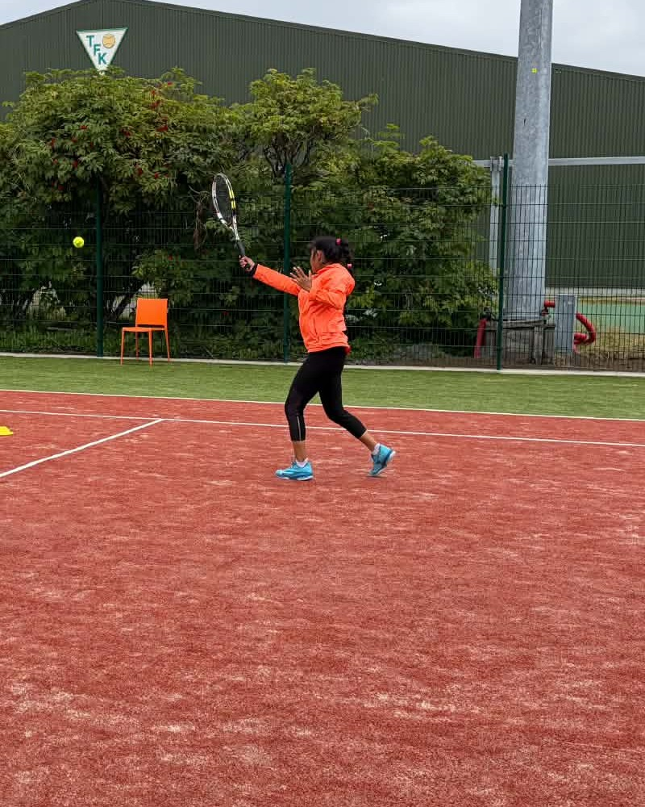

Multiple-time Icelandic champion. Icelandic Player of the Year in 2023 and 2024. Three-time Tennis Europe U16 singles champion, now ranked on the ITF World Tennis Tour.

Official rankings, each linked to its source.
National titles and awards in Iceland, and titles on the Tennis Europe Junior Tour.
Icelandic Women's Tennis Player of the Year (Tennisspilari ársins), 2023 and 2024.
Multiple-time Icelandic champion, with indoor and outdoor titles.
Kópavogur Open (2024, 2025) and Icelandic Open, Reykjavík (2024).
One U16 doubles title.

Garima is a multiple-time Icelandic champion (first title at 12) and Iceland's women's Tennis Player of the Year for 2023 and 2024. She has won three Tennis Europe U16 singles titles and a doubles title, and has moved on to ITF World Tennis Tour draws in Turkey, Serbia and India. She regularly plays older opponents, and her next gains will come from more match play and the right tournament entries.
| Full name | Garima Nitinkumar Kalugade |
| Year of birth | 2010 |
| Federations | Tennis Iceland (TSÍ) · AITA, India (Maharashtra, reg. 449685) |
| ITF World Tennis ranking | #1673 singles (26 Oct 2026) · career high #1665 · ITF profile |
| WTA ranking | Not listed yet · check WTA |
| AITA rankings | Women's Singles top 400 · Girls U-18 best #667 (Jan 2026) |
| ITF player ID | 800737950 |
| Plays | right / left-handed, backhand |
| Height | add height |
| Coach | add coach name |
Selected results, each linked to its source.
Singles ranking as of 26 October 2026, with a career high of #1665 on 5 October. Pro-level record this year: 3 wins, 3 losses. Source
Won three qualifying matches across three events, including a 6-7 6-2 10-7 comeback in Kayseri. Source
Girls U-18 best ranking #667 (January) and AITA Women's Singles top 400. Source
Named Tennisspilari ársins for the second year in a row at the Tennis Iceland year-end awards. Source
June. National champion at 13, her second straight Icelandic title. Source
April. Íslandsmeistari innanhúss, announced by Tennis Iceland. Source
July. Straight-sets wins throughout, beating Alice Sclafani (ITA) 6-1 6-2 in the final. A week earlier she was runner-up at the first Icelandic Open U16 event. Source
March. Beat Marie Charlotte Monnier (POL) 6-3 6-2 in the final. Source
One Tennis Europe U16 doubles title, alongside her three singles titles. add year, tournament and partner
Quarter-finalist (semi-finalist in 2023). Source
June. Won the Reykjavík event at Víkingsvöllur, playing for Víkingur. Source
For sponsors, federations and tournament directors.
Cash, equipment or apparel, travel or accommodation, or a custom package.
Discuss sponsorshipTennis Iceland (TSÍ) and AITA (India), with results on Tennis Europe and ITF events.
Garima welcomes team call-ups and will represent her federation with pride.
Messages go to Dhanashri Pawar, Garima's mother, who manages enquiries.
Follow her draws: ITF · Tennis Europe · TSÍ